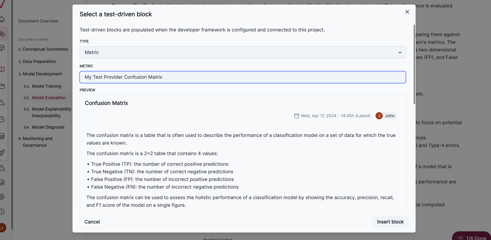

%pip install -q validmindIntegrate external test providers
Register a custom test provider with the ValidMind Library to run your own tests.
The ValidMind Library offers the ability to extend the built-in library of tests with custom tests. If you’ve followed along in the Implement custom tests notebook, you will be familiar with the process of creating custom tests and running them for use in your model documentation. In that notebook, the tests were defined inline, as a notebook cell, using the validmind.test decorator. This works very well when you just want to create one-off, ad-hoc tests or for experimenting. But for more complex, reusable and shareable tests, it is recommended to use a more structured approach.
This is where the concept of External Test Providers come in. A test “Provider” is a Python class that gets registered with the ValidMind Library and loads tests based on a test ID, for example my_test_provider.my_test_id. The built-in suite of tests that ValidMind offers is technically its own test provider. You can use one the built-in test provider offered by ValidMind (validmind.tests.test_providers.LocalTestProvider) or you can create your own. More than likely, you’ll want to use the LocalTestProvider to add a directory of custom tests but there’s flexibility to be able to load tests from any source.
In this notebook, we’ll take you through the process of creating a folder of custom tests from existing, inline tests. We’ll then show you how to defined and register a LocalTestProvider that points to that folder. Finally, we’ll show how the test ID works when using test providers and how you can run and use custom tests from your provider.
Contents
Prerequisites
As mentioned above, its recommended that you have gone through the Implement custom tests notebook to understand the basics of creating custom tests. We will be using the same tests defined in that notebook.
If you encounter errors due to missing modules in your Python environment, install the modules with pip install, and then re-run the notebook. For more help, refer to Installing Python Modules.
Key concepts
- Test Provider: A Python class that gets registered with the ValidMind Library and loads tests based on a test ID e.g.
my_test_provider.my_test_id. - LocalTestProvider: A built-in test provider that loads tests from a local directory.
- Test ID: A unique identifier for a test that is used to load the test from a test provider. Test IDs in ValidMind have multiple parts, separated by dots (
.), that have special meaning/functions -namespace.path.test_name:result_id(e.g.validmind.data_validation.ClassImbalance:1):namespace: The namespace of the test - built-in tests use thevalidmindnamespace, custom test providers specify a custom namespace when they are registeredpath: The path to the test within the test provider. For internal tests, this is relative to thevalidmind/testsdirectory. When using aLocalTestProviderthis is relative to the root directory you specify when creating the provider class instance. Note: This path-based approach is a convention and not a strict requirement when implementing your own test provider.test_name: The name of the test module (file) as well as the name of the function or class that is the “test” itself. Again, this is a convention for internal andLocalTestProvidertests, but test files should be named the same as the test function or class they contain.result_id: An optional identifier for the test. Especially useful, and required, for running tests multiple times in one section. This is separated from the previous parts by a colon:and can be effectively ignored when loading the test itself as its only used to uniquely identify the test result.
High-level steps
- Create a folder of custom tests from existing, inline tests.
- Define and register a
LocalTestProviderthat points to that folder. - Use the test ID to run, view and log custom tests from your provider.
- Add the test results to your documentation
run_documentation_tests()to run custom tests as part of your documentation template suite
About ValidMind
ValidMind’s suite of tools enables organizations to identify, document, and manage model risks for all types of models, including AI/ML models, LLMs, and statistical models. As a model developer, you use the ValidMind Library to automate documentation and validation tests, and then use the ValidMind Platform to collaborate on model documentation. Together, these products simplify model risk management, facilitate compliance with regulations and institutional standards, and enhance collaboration between yourself and model validators.
If this is your first time trying out ValidMind, we recommend going through the following resources first:
- Get started — The basics, including key concepts, and how our products work
- Get started with the ValidMind Library — The path for developers, more code samples, and our developer reference
Before you begin
For access to all features available in this notebook, create a free ValidMind account.
Signing up is FREE — Register with ValidMind
Signing up is FREE — Register with ValidMind
Install the ValidMind Library
To install the library:
Initialize the ValidMind Library
ValidMind generates a unique code snippet for each registered model to connect with your developer environment. You initialize the ValidMind Library with this code snippet, which ensures that your documentation and tests are uploaded to the correct model when you run the notebook.
Get your code snippet
In a browser, log in to ValidMind.
In the left sidebar, navigate to Model Inventory and click + Register Model.
Enter the model details and click Continue. (Need more help?)
For example, to register a model for use with this notebook, select:
- Documentation template:
Binary classification - Use case:
Marketing/Sales - Attrition/Churn Management
You can fill in other options according to your preference.
- Documentation template:
Go to Getting Started and click Copy snippet to clipboard.
Next, load your model identifier credentials from an .env file or replace the placeholder with your own code snippet:
# Load your model identifier credentials from an `.env` file
%load_ext dotenv
%dotenv .env
# Or replace with your code snippet
import validmind as vm
vm.init(
# api_host="...",
# api_key="...",
# api_secret="...",
# model="...",
)Set up custom tests
If you’ve gone through the Implement custom tests notebook, you should have a good understanding of how custom tests are implemented. If you haven’t, we recommend going through that notebook first. In this notebook, we will take those custom tests and move them into separate modules in a folder. This is the logical progression from the previous notebook, as it allows you to take one-off tests and move them into an organized structure that makes it easier to manage, maintain and share them.
First let’s set the path to our custom tests folder.
tests_folder = "my_tests"Now let’s create this folder if it doesn’t exist. If it does, let’s empty it to start fresh.
import os
# create tests folder
os.makedirs(tests_folder, exist_ok=True)
# remove existing tests
for f in os.listdir(tests_folder):
# remove files and pycache
if f.endswith(".py") or f == "__pycache__":
os.system(f"rm -rf {tests_folder}/{f}")Let’s go ahead and redefine the custom tests we created in the previous notebook.
import matplotlib.pyplot as plt
from sklearn import metrics
from validmind import test
@test("my_custom_tests.ConfusionMatrix")
def confusion_matrix(dataset, model):
"""The confusion matrix is a table that is often used to describe the performance of a classification model on a set of data for which the true values are known.
The confusion matrix is a 2x2 table that contains 4 values:
- True Positive (TP): the number of correct positive predictions
- True Negative (TN): the number of correct negative predictions
- False Positive (FP): the number of incorrect positive predictions
- False Negative (FN): the number of incorrect negative predictions
The confusion matrix can be used to assess the holistic performance of a classification model by showing the accuracy, precision, recall, and F1 score of the model on a single figure.
"""
confusion_matrix = metrics.confusion_matrix(dataset.y, dataset.y_pred(model))
cm_display = metrics.ConfusionMatrixDisplay(
confusion_matrix=confusion_matrix, display_labels=[False, True]
)
cm_display.plot()
plt.close() # close the plot to avoid displaying it
return cm_display.figure_ # return the figure object itselfThe decorator thats used to register these as one-off custom tests adds a convenience method to the function object that allows us to simply call <func_name>.save() to save it to a file. This will save the function to a Python file in the current directory. You can also pass a path to a folder to save it to a different location. In our case, we can pass the variable tests_folder to save it to the custom tests folder we created.
Normally, this will get you started by creating the file and saving the function code with the correct name. But it won’t automatically add any import or other functions/variables outside of the function that are needed for the test to run. In that case, you would need to manually add those to the file.
But for the sake of this demo, we will pass a list of imports into the save method to automatically add them to the file.
confusion_matrix.save(
tests_folder,
imports=["import matplotlib.pyplot as plt", "from sklearn import metrics"],
)Let’s go ahead and do this for the rest of the tests.
@test("my_custom_tests.Hyperparameters")
def hyperparameters(model):
"""The hyperparameters of a machine learning model are the settings that control the learning process.
These settings are specified before the learning process begins and can have a significant impact on the
performance of the model.
The hyperparameters of a model can be used to tune the model to achieve the best possible performance
on a given dataset. By examining the hyperparameters of a model, you can gain insight into how the model
was trained and how it might be improved.
"""
hyperparameters = model.model.get_xgb_params() # dictionary of hyperparameters
# turn the dictionary into a table where each row contains a hyperparameter and its value
return [{"Hyperparam": k, "Value": v} for k, v in hyperparameters.items() if v]
hyperparameters.save(tests_folder)import requests
@test("my_custom_tests.ExternalAPI")
def external_api():
"""This test calls an external API to get the current BTC price. It then creates
a table with the relevant data so it can be displayed in the documentation.
The purpose of this test is to demonstrate how to call an external API and use the
data in a test. A test like this could even be setup to run in a scheduled
pipeline to keep your documentation in-sync with an external data source.
"""
url = "https://api.coindesk.com/v1/bpi/currentprice.json"
response = requests.get(url)
data = response.json()
# extract the time and the current BTC price in USD
return [
{
"Time": data["time"]["updated"],
"Price (USD)": data["bpi"]["USD"]["rate"],
}
]
external_api.save(tests_folder, imports=["import requests"])import plotly_express as px
@test("my_custom_tests.ParameterExample")
def parameter_example(
plot_title="Default Plot Title", x_col="sepal_width", y_col="sepal_length"
):
"""This test takes two parameters and creates a scatter plot based on them.
The purpose of this test is to demonstrate how to create a test that takes
parameters and uses them to generate a plot. This can be useful for creating
tests that are more flexible and can be used in a variety of scenarios.
"""
# return px.scatter(px.data.iris(), x=x_col, y=y_col, color="species")
return px.scatter(
px.data.iris(), x=x_col, y=y_col, color="species", title=plot_title
)
parameter_example.save(tests_folder, imports=["import plotly_express as px"])import numpy as np
import plotly_express as px
@test("my_custom_tests.ComplexOutput")
def complex_output():
"""This test demonstrates how to return many tables and figures in a single test"""
# create a couple tables
table = [{"A": 1, "B": 2}, {"A": 3, "B": 4}]
table2 = [{"C": 5, "D": 6}, {"C": 7, "D": 8}]
# create a few figures showing some random data
fig1 = px.line(x=np.arange(10), y=np.random.rand(10), title="Random Line Plot")
fig2 = px.bar(x=["A", "B", "C"], y=np.random.rand(3), title="Random Bar Plot")
fig3 = px.scatter(
x=np.random.rand(10), y=np.random.rand(10), title="Random Scatter Plot"
)
return (
{
"My Cool Table": table,
"Another Table": table2,
},
fig1,
fig2,
fig3,
)
complex_output.save(
tests_folder, imports=["import numpy as np", "import plotly_express as px"]
)import io
import matplotlib.pyplot as plt
@test("my_custom_tests.Image")
def image():
"""This test demonstrates how to return an image in a test"""
# create a simple plot
fig, ax = plt.subplots()
ax.plot([1, 2, 3, 4])
ax.set_title("Simple Line Plot")
# save the plot as a PNG image (in-memory buffer)
img_data = io.BytesIO()
fig.savefig(img_data, format="png")
img_data.seek(0)
plt.close() # close the plot to avoid displaying it
return img_data.read()
image.save(tests_folder, imports=["import io", "import matplotlib.pyplot as plt"])Registering the test provider
Test providers overview
Now that we have a folder with our custom tests, we can create a test provider that will tell the ValidMind Library where to find these tests. ValidMind offers out-of-the-box test providers for local tests (i.e. tests in a folder) or a Github provider for tests in a Github repository. You can also create your own test provider by creating a class that has a load_test method that takes a test ID and returns the test function matching that ID. The protocol for test providers is below:
class ExternalTestProvider(Protocol):
"""Protocol for user-defined test providers"""
def load_test(self, test_id: str) -> callable:
"""Load the test by test ID
Args:
test_id (str): The test ID (does not contain the namespace under which
the test is registered)
Returns:
callable: The test object
Raises:
FileNotFoundError: If the test is not found
"""
...Local test provider
For most use-cases, the local test provider should be sufficient. Let’s go ahead and see how we can do this with our custom tests.
from validmind.tests import LocalTestProvider
# initialize the test provider with the tests folder we created earlier
my_test_provider = LocalTestProvider(tests_folder)
vm.tests.register_test_provider(
namespace="my_test_provider",
test_provider=my_test_provider,
)
# `my_test_provider.load_test()` will be called for any test ID that starts with `my_test_provider`
# e.g. `my_test_provider.ConfusionMatrix` will look for a function named `ConfusionMatrix` in `my_tests/ConfusionMatrix.py` fileRunning test provider tests
Now that we have our test provider set up, we can run any test that’s located in our tests folder by using the run_test() method. This function is your entry point to running single tests in the ValidMind Library. It takes a test ID and runs the test associated with that ID. For our custom tests, the test ID will be the namespace specified when registering the provider, followed by the path to the test file relative to the tests folder. For example, the Confusion Matrix test we created earlier will have the test ID my_test_provider.ConfusionMatrix. You could organize the tests in subfolders, say classification and regression, and the test ID for the Confusion Matrix test would then be my_test_provider.classification.ConfusionMatrix.
Let’s go ahead and run some of our tests. But first, let’s setup a dataset and model to run against.
Set up the model and dataset
First let’s setup a an example model and dataset to run our custom metic against. Since this is a Confusion Matrix, we will use the Customer Churn dataset that ValidMind provides and train a simple XGBoost model.
import xgboost as xgb
from validmind.datasets.classification import customer_churn
raw_df = customer_churn.load_data()
train_df, validation_df, test_df = customer_churn.preprocess(raw_df)
x_train = train_df.drop(customer_churn.target_column, axis=1)
y_train = train_df[customer_churn.target_column]
x_val = validation_df.drop(customer_churn.target_column, axis=1)
y_val = validation_df[customer_churn.target_column]
model = xgb.XGBClassifier(early_stopping_rounds=10)
model.set_params(
eval_metric=["error", "logloss", "auc"],
)
model.fit(
x_train,
y_train,
eval_set=[(x_val, y_val)],
verbose=False,
)Easy enough! Now we have a model and dataset setup and trained. One last thing to do is bring the dataset and model into the ValidMind Library:
# for now, we'll just use the test dataset
vm_raw_ds = vm.init_dataset(
dataset=raw_df,
target_column=customer_churn.target_column,
input_id="raw_dataset",
)
vm_train_ds = vm.init_dataset(
dataset=train_df,
target_column=customer_churn.target_column,
input_id="train_dataset",
)
vm_test_ds = vm.init_dataset(
dataset=test_df,
target_column=customer_churn.target_column,
input_id="test_dataset",
)
vm_model = vm.init_model(model, input_id="model")
# link the model to the datasets
vm_train_ds.assign_predictions(model=vm_model)
vm_test_ds.assign_predictions(model=vm_model)Run the tests
Now that we have our model and dataset setup, we can run our custom tests against them. Let’s go ahead and run the Confusion Matrix test.
from validmind.tests import run_test
result = run_test(
"my_test_provider.ConfusionMatrix",
inputs={"dataset": vm_test_ds, "model": vm_model},
)You should see the output of the test above. If you want to learn more about how test functions are run and get turned into test results, check out the Implement custom tests notebook.
Let’s go ahead and log the result to the ValidMind Platform.
result.log()Add custom tests to model documentation
Now that the result has been logged to the ValidMind Platform, you can add it to your model documentation. This will add the result where you specify but it also will add the test to the template so it gets run anytime you run_documentation_tests(). To do this, go to the documentation page of the model you connected to above and navigate to the Model Development -> Model Evaluation section. Then hover between any existing content block to reveal the + button as shown in the screenshot below.

Now click on the + button and select the Test-Driven Block option. This will open a dialog where you can select My Test Provider Confusion Matrix from the list of available tests. You can preview the result and then click Insert Block to add it to the documentation.

The test should match the result you see above.
Run, save, and add other tests
Let’s take the same steps for all of our other custom tests.
run_test(
"my_test_provider.ComplexOutput", inputs={"dataset": vm_test_ds, "model": vm_model}
).log()
run_test("my_test_provider.ExternalAPI").log()
run_test("my_test_provider.Hyperparameters", inputs={"model": vm_model}).log()
run_test("my_test_provider.Image").log()
run_test(
"my_test_provider.ParameterExample",
params={
"plot_title": "Test Provider Plot",
"x_col": "petal_width",
"y_col": "petal_length",
},
).log()Now that they are all saved, follow the same steps above to add them to the model documentation. Once thats done, we will run the documentation tests to see all of them run automatically.
Verify that preview_template() now loads the tests from the test providers
Now that we have added the tests to the model documentation, we can run the preview_template() method to see the tests run automatically.
First, let’s reload the connection to the model to get the updated documentation template.
vm.reload()Now, run preview_template() and verify that the tests you added are included in the proper section.
vm.preview_template()Run the documentation tests
Now we can run the documentation tests as normal. This should include all of our custom tests which will be loaded from our test provider folder.
test_config = customer_churn.get_demo_test_config()
suite_results = vm.run_documentation_tests(config=test_config)Conclusion
In this notebook, we showed how to integrate custom tests into the ValidMind Library. We created a custom test provider that loads tests from a folder and then ran the tests against a model and dataset. We then added the tests to the model documentation and ran the documentation tests to see all of the tests run automatically. This is a powerful concept that allows you to create, organize and, most importantly, share custom tests with other model developers.
Next steps
You can look at the results of this test suite right in the notebook where you ran the code, as you would expect. But there is a better way — use the ValidMind Platform to work with your model documentation.
Work with your model documentation
From the Model Inventory in the ValidMind Platform, go to the model you registered earlier. (Need more help?)
Click and expand the Model Development section.
What you see is the full draft of your model documentation in a more easily consumable version. From here, you can make qualitative edits to model documentation, view guidelines, collaborate with validators, and submit your model documentation for approval when it’s ready. Learn more …
Discover more learning resources
We offer many interactive notebooks to help you document models:
Or, visit our documentation to learn more about ValidMind.
Upgrade ValidMind
After installing ValidMind, you’ll want to periodically make sure you are on the latest version to access any new features and other enhancements.
Retrieve the information for the currently installed version of ValidMind:
%pip show validmindIf the version returned is lower than the version indicated in our production open-source code, restart your notebook and run:
%pip install --upgrade validmindYou may need to restart your kernel after running the upgrade package for changes to be applied.